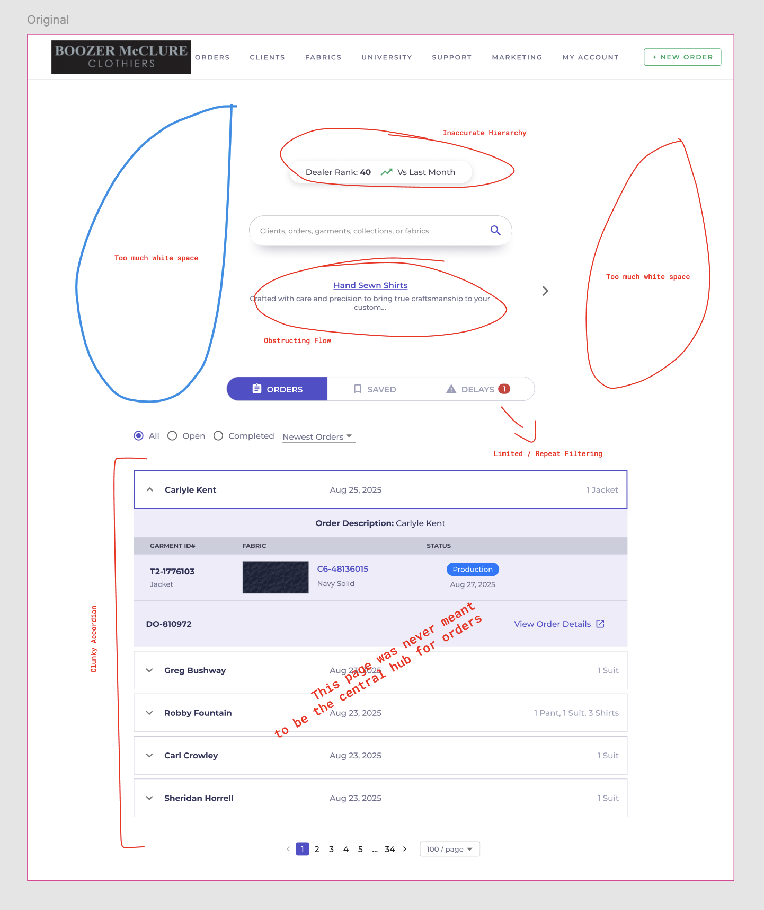
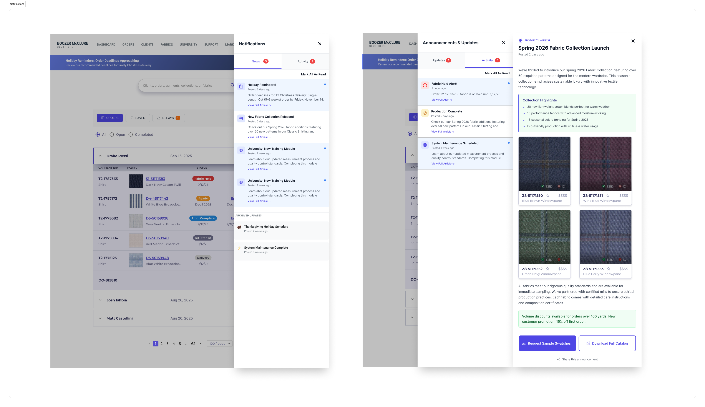
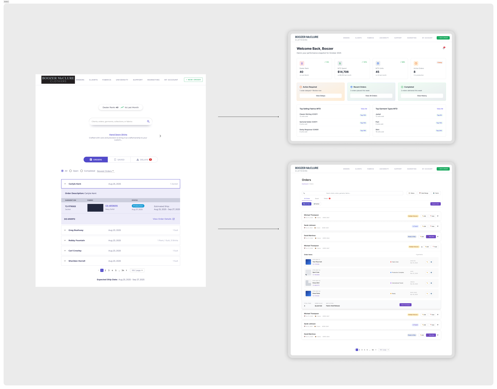
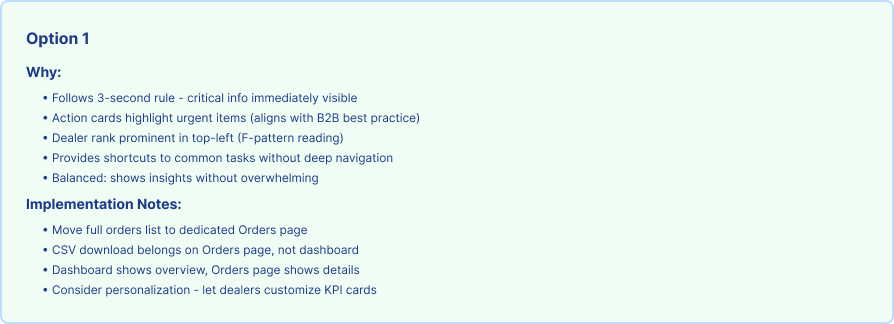

Project Impact
- Information architecture that organized fragmented data into logical zones
- Notification system distinguishing urgent alerts from marketing content
- Strategic product thinking that reclaimed homepage purpose
- Scalable foundation for future dashboard widgets and features
The Challenge
Trinity's homepage had an identity crisis. Originally conceived as a dashboard—a command center for managing their custom apparel business—it had quietly devolved into nothing more than a glorified order list.
The symptom: Users landed on the homepage and saw a dense table of orders. Nothing else.
The problem:
- No visibility into business health or key metrics
- Important system notifications buried in email
- Marketing announcements invisible
- No pathway to common tasks
- Wasted prime real estate on redundant order views

Strategic Approach
Defining Dashboard Purpose
Rather than just "make it look better," I established clear strategic purpose:
A dashboard should:
- Inform: Provide at-a-glance business health indicators
- Alert: Surface time-sensitive notifications and action items
- Direct: Offer clear pathways to common tasks
- Reassure: Give users confidence things are running smoothly
The Notification Architecture Decision
One strategic insight emerged from research: not all notifications are created equal.
Users were suffering from notification fatigue because system alerts, marketing updates, and account notifications were all competing for attention in email.
Strategic decision: Create a notification center that distinguishes between alerts (require action/awareness) and updates (nice to know).

Key Design Decisions
1. Metric Card Layout
Decision: Three metric cards above the fold showing key business indicators
Rationale:
- Quick scan pattern (left to right)
- Visual hierarchy (large numbers = confidence)
- Contextualized data (not just "127" but "127 active orders")
- Color coding for status at a glance

2. Notification Center Architecture
Decision: Dedicated notification center with master-detail pattern
Master view:
- Bell icon with badge count (unread notifications)
- Dropdown panel showing notification list
- Visual distinction between Alerts (red dot) vs. Updates (blue dot)
Why master-detail:
- Doesn't clutter the main dashboard
- Allows for rich notification content
- Scalable (can grow to hundreds of notifications)
- Familiar pattern from consumer apps
3. Orders Section Redesign
Decision: Compact order preview with "View All Orders" CTA, not full table
Rationale:
- Dashboard isn't for deep order management (that's the Orders page)
- Show 3-5 recent orders as "what's happening now"
- Clear hierarchy: Metrics → Notifications → Recent Activity
- Visual cards instead of data table (more scannable)
Information Architecture

Above the Fold
- Header: Branding + notification bell + user profile
- Hero section: Three metric cards
- Call to action: Create New Order button
- Content area: Notification highlights
Below the Fold
- Recent Orders: Compact card view (3-5 orders)
- View All Orders CTA: Clear pathway to dedicated page
Final Solution
The Dashboard Experience
Users are immediately greeted with business health at a glance: active orders count, orders shipped this week, pending actions count. The notification bell shows at-a-glance whether anything needs attention. The prominent "Create New Order" button provides clear next action.

Notification Center Detail
Clicking the notification bell reveals organized alerts and updates: urgent items at top (red dots), system notifications in middle, updates and announcements at bottom. Each notification is actionable.

Outcomes & Impact
User Feedback
- "Finally feels like I have control over the business"
- "I know what needs my attention right away"
- "Don't have to dig through email for important updates"
Business Value
Expected outcomes:
- Reduced time to critical information
- Improved response time to urgent issues
- Better marketing message engagement (separated from noise)
- Foundation for business intelligence features
Reflections & Learnings
What Worked Well
Strategic reframing: Questioning "what is a dashboard for?" prevented us from just making the order list prettier.
Notification type taxonomy: Distinguishing alerts from updates solved a real pain point and created a scalable system.
What I'd Do Differently
Customization strategy: Different user roles (leadership vs. sales rep) may want different metric cards. Building role-based customization would add significant value.
Future Enhancements
- Customizable metric widgets
- Role-based dashboards
- Trend visualization
- Notification preferences
Portfolio Takeaways
This project demonstrates senior-level thinking through:
- ✅ Strategic problem identification (not an order list, but a command center)
- ✅ Information architecture (organizing complex, fragmented data)
- ✅ System design (notification taxonomy that scales)
- ✅ Product vision (designed for current needs + future expansion)
Next Project: Final Shipments Manager
Domain-Specific UX for Warehouse Operations
View Case Study →